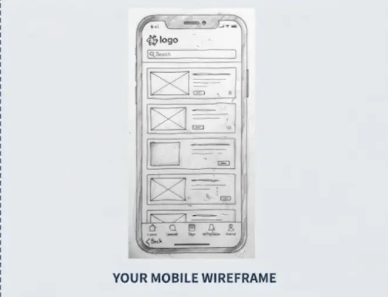
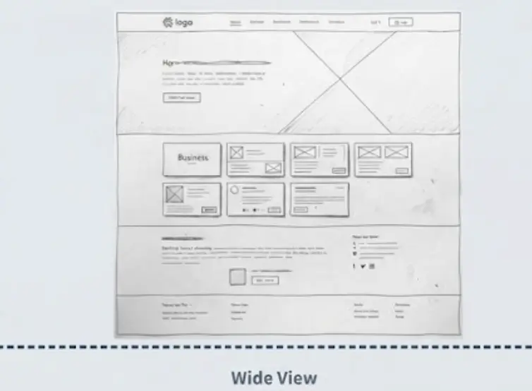

Finding a Business
Where can I find a reliable business in Lagos that provides the product or service I need?
WDD 231 • Individual Project
Lagos Chamber of Commerce Business Directory
Lagos Business Connect was selected because the name clearly communicates the purpose of the website: connecting visitors with businesses and organizations within the Lagos Chamber of Commerce community.
The name is simple, professional, memorable, and appropriate for a business directory serving companies in Lagos.
Possible domain: lagosbusinessconnect.com
Lagos Business Connect provides a central online directory where visitors can discover businesses that are part of the Lagos Chamber of Commerce community.
The website will provide:
The following questions represent the needs of visitors who may use the Lagos Business Connect website.
Where can I find a reliable business in Lagos that provides the product or service I need?
How can I find the address, phone number, website, or other contact information for a Chamber member?
Which businesses are Gold, Silver, or regular members of the Lagos Chamber of Commerce?
Can I view businesses in a grid or list format so I can quickly compare different companies?
The color scheme is designed to communicate professionalism, trust, business growth, and a strong Lagos identity.
Hex: #12355B
Used for the main header, primary headings, navigation, buttons, and important interface elements.
Hex: #D4A017
Used for accents, borders, highlights, membership indicators, section details, and calls to action.
Hex: #FFFFFF
Used as the primary background color for content areas and text placed on the navy header.
Hex: #17202A
Used for body text and supporting information to provide strong readability and accessibility.
Primary Heading Font
Roboto will be used for major headings, section headings, navigation labels, buttons, and other interface elements.
Body Font
Open Sans will be used for paragraphs, descriptions, business information, labels, and other readable content.
Open Sans provides a clean and highly readable appearance across mobile and desktop screen sizes.
Example Application
Discover businesses, services, and organizations that make up the Lagos Chamber of Commerce community.
The wireframes define the basic structure of the home page before detailed styling and development. The layouts focus on content hierarchy, navigation, responsiveness, and usability.
YOUR MOBILE WIREFRAME

YOUR DESKTOP WIREFRAME

Site branding, logo, and primary navigation links.
A brief introduction explaining the purpose of the Chamber business directory.
Buttons allowing visitors to switch between grid and list views.
Business cards containing company names, images, membership levels, addresses, contact details, and website links.
Contact information, social media links, copyright information, and project information.
The website will be developed using semantic HTML, CSS, and JavaScript. The design will follow responsive web design principles so that content remains usable across different screen sizes.